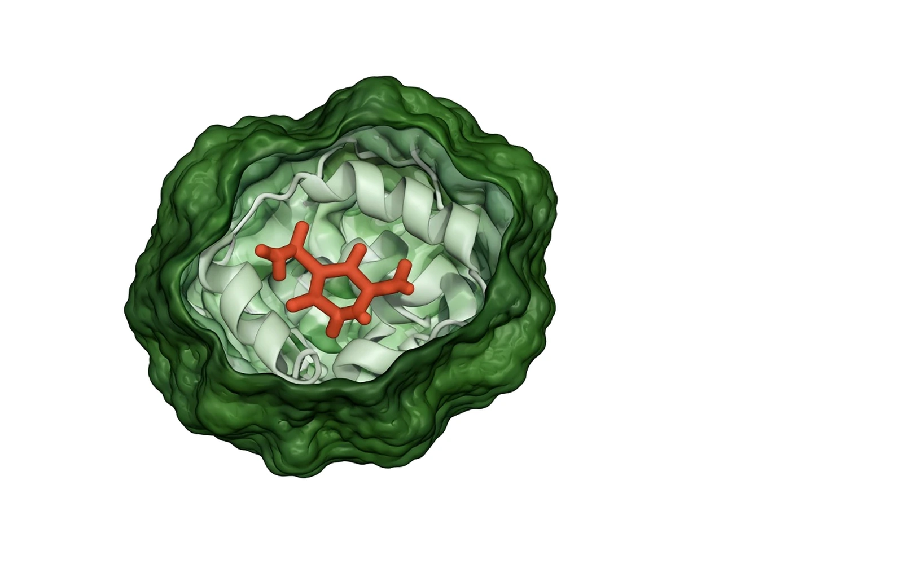
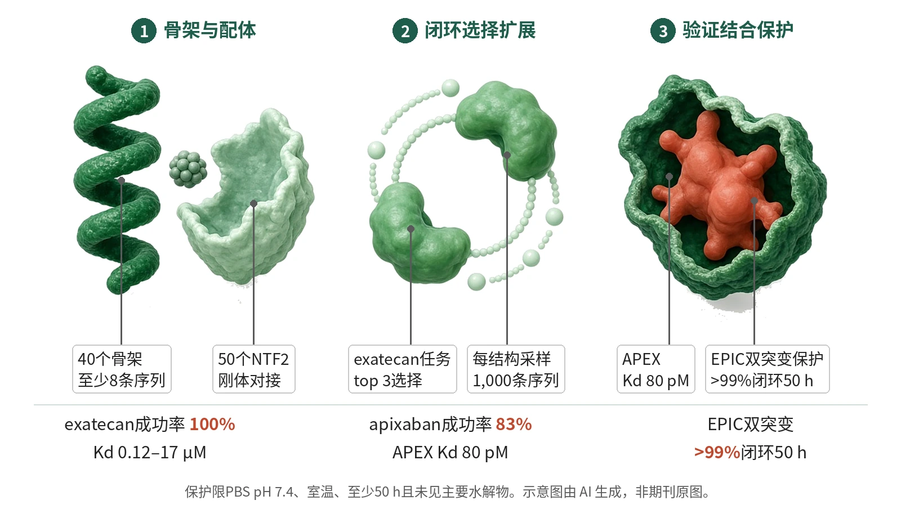

封面示意：深绿蛋白口袋中，赤陶红药物分子居中。图片由 AI 生成，非原文图片。
在exatecan与apixaban体外任务中，NISE闭环神经网络从头设计结合蛋白并完成亲和力验证；APEX对apixaban的Kd为80 pM。

- 放置药物并筛选口袋
- LASErMPNN扩展序列
- 共结构预测选择自洽体
- 表达纯化后测定Kd
- 验证特异性与水解保护
图示NISE从可设计骨架和小分子姿态出发，经LASErMPNN与共结构预测器反复选择、扩展，得到体外验证的小分子结合蛋白；标签列出文中主要结合与化学保护读出。示意图由 AI 生成，依据原文结果绘制，非期刊原图，不代表分子比例
研究背景与待解问题
从头设计能抓住小分子的蛋白，需要同时匹配序列、骨架和配体构象。以往成功多依赖高通量筛选，或把配体官能团简化成类似氨基酸的片段；一旦对象换成真实药物，搜索空间和化学表征都会放大。
Fry等在Nature提出的切口，是把“序列给定结构”和“结构给定序列”的神经网络接成闭环。NISE不先靠能量函数定稿，而在每轮保留蛋白骨架与配体姿态都自洽的候选，再扩展序列，目标是零样本得到可表达、可结合的药物结合蛋白。
研究设计
exatecan搜索先从40个AF2预测的四螺旋束库出发，每个结构至少有8条序列通过置信阈值。作者先用COMBS把exatecan构象放入口袋，再以一个未实验表征的COMBS–Rosetta模型去掉序列后作为NISE输入。exatecan的NISE每轮按配体pLDDT选择top 3自洽结构，再为每个结构采样1,000条LASErMPNN序列。
apixaban任务改用50个计算生成的NTF2折叠、刚体对接，并运行14–28轮NISE轨迹。该任务把共结构预测器换成Boltz-2，并以配体pLDDT和P(bind)复合评分排序。研究不是组间效能设计；NISE、COMBS、历史LigandMPNN/Rosetta与HSA对照主要用于方法学比较，成功率差异未作正式假设检验。
核心结果
核心读出
摘要层面，NISE在exatecan和apixaban上的结合成功率分别为100%和83%，最紧结合体相对下一领先方法分别约70倍和近10,000倍。正文随后用荧光偏振、竞争结合和吸收光谱验证候选，读出集中在Kd、结合比例和exatecan闭环状态。这些读出覆盖不同折叠和化学性质不同的药物。
exatecan结合
exatecan实验中，4个NISE设计全部结合，Kd为0.12–17 µM，其中3个低于10 µM；非特异性HSA为43 µM。对照的16个COMBS设计中只有3个结合exatecan，Kd分别为8、12和44 µM。EPIC作为最紧NISE结合体，也比HSA更紧。
闭环对照
算法对照显示，NISE而非energy-based ISE同时提高配体pLDDT并降低序列NLL，图注四分位数来自每轮n=1,500个设计，第一轮为n=500。传统能量最小化循环未让NLL下降，也未提高配体pLDDT，支持“神经网络闭环”而非单纯筛选是关键。
apixaban亲和力
apixaban任务的头部结果是APEX：Kd=80 pM，95% CI为54–122 pM；factor Xa的Ki为80–700 pM，分子量13 kDa对43 kDa。6个入选设计中5个结合apixaban，且Kd均低于50 nM。特异性读出也有图例限制：APEX在50 nM exatecan下无可观结合，连接线不是拟合。
校对与保护
LASErMPNN校对给出的EPIC(Q51N/M97L)把亲和力提高100倍，Kd=1.2 nM，ΔΔG=−2.7 kcal mol−1。单突变EPIC(Q51N)和EPIC(M97L)的Kd分别为8.0 nM和7.4 nM。在PBS pH 7.4中，EPIC(Q51N/M97L)使超过99%的exatecan至少50 h保持闭环，且未见主要水解产物。相比之下，游离exatecan在血浆中的水解半衰期约2 h。
机制解读
原文实验证明：计算链条直接显示，NISE在同一exatecan输入上让配体pLDDT升高、序列NLL降低；energy-based ISE没有同步改善。实验链条随后对应到体外Kd：NISE的4个exatecan设计全结合，而COMBS对照16个中只有3个结合。
结构层面，EPIC晶体分辨率为2.0 Å，EPIC(Q51N)为2.2 Å。EPIC骨架与NISE上游输入接近，Cα r.m.s.d.为0.8 Å；Q51N较短侧链让exatecan约0.5 Å更深入口袋，并形成双齿氢键，解释亲和力提升的结构基础。
作者推测：作者推测，NISE是在P(sequence, structure, ligand conformation)的联合分布中爬向高概率模态；这种说法来自互补条件分布和模型置信度的变化，不等同于直接观测到真实设计能量地形。作者还提出，未来可把正向pLDDT和脱靶pLDDT差距结合做负向设计。
局限与不确定
- 外推性有限：实验目标集中在exatecan和apixaban，骨架也限于四螺旋束与NTF2。虽然成功率为100%和83%，这些结果不能自动外推到原文未测试的其他药物和骨架。
- 样本量仍小：真正订购并测试的NISE候选为exatecan 4个、apixaban 6个；COMBS对照为16个。Kd区间虽清楚，但这些不是为比较成功率而设计效能的随机实验。
- 终点停留在体外：水解保护最长展示至少50 h，并在PBS或HSA存在下完成；文章没有给出动物药代、免疫原性、组织分布或释放动力学数据。
- 模型选择仍是局限：作者写明，若用RFAA评估会丢弃apixaban结合蛋白，Boltz-2对实验选择很重要。APEX脱靶读出还限于50 nM exatecan且连接线不是拟合，不能替代系统脱靶谱。
临床/产业意义
如果这种闭环在更多药物上保持稳定，NISE会把小分子结合蛋白设计从大库筛选推向少量候选的计算优先流程。对药物递送或药物清除概念，本文最直接的价值是能做出高亲和“海绵”或保护蛋白，而不是已经证明体内疗效。
产业上，结果提示LASErMPNN、RFAA或Boltz-2一类模型的组合可服务于药物载荷保护、传感和催化前体发现；但转化判断必须以表达、稳定性、选择性和体内暴露共同成立为条件。